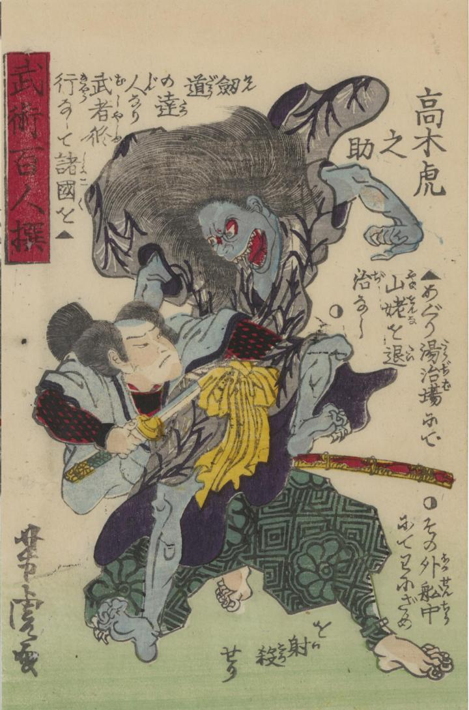

高木虎之助が山姥を刀で刺し、退治している。山姥は身体が青く、大きな口から牙がみえている。高木虎之助を睨み付けている。
著作者：錦朝樓芳虎／出典：親書誌：U426_nichibunken_0383：武術百勇選 : 全；ブジュツ ヒャクユウ セン : ゼン／日付：2014／資源識別子：U426_nichibunken_0383_0006_0000
Copyright (c)2010- International Research Center for Japanese Studies, Kyoto, Japan. All rights reserved.